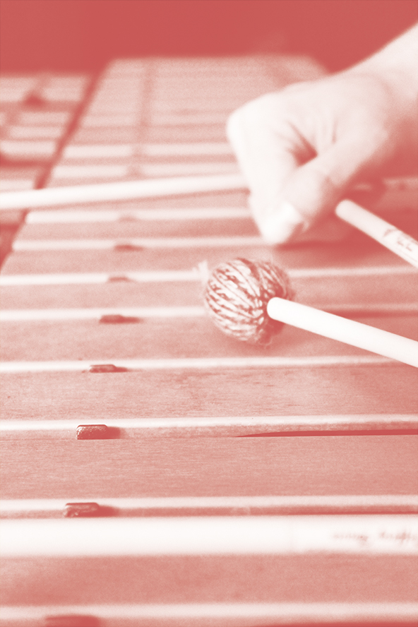
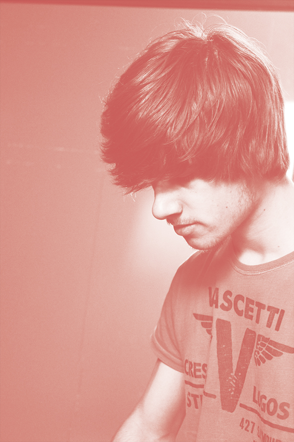

20-05-14
RICARDO
COELHO
Conheci o Ricardo ao mesmo tempo que o Pedro Chibante, na mesma organização onde estivemos juntos. As viagens que fiz com o Inho foram as mesmas que fiz com o Ricardo por isso passámos os três muito tempo juntos e a música é sempre um tópico muito rodado entre nós. Já tive a excelente oportunidade de tocar com ele em diversas situações, uma das quais, no acampamento de Esmoriz onde estive também com o Inho.
O Ricardo estuda Vibrafone Jazz na ESMAE e antes disso estudou Percussão Clássica, também lá, por isso, fez todo o sentido ser o local onde nos encontrámos para tirar as fotografias.

Agora temos estados juntos sempre que consigo ir a uma Jam ou concerto, como tenho tentado, às quintas-feiras na Baixaria ver os SNAP’ITUDE onde ele toca bateria, juntamente com o Mané, e sempre seguido de uma bela Jam.
